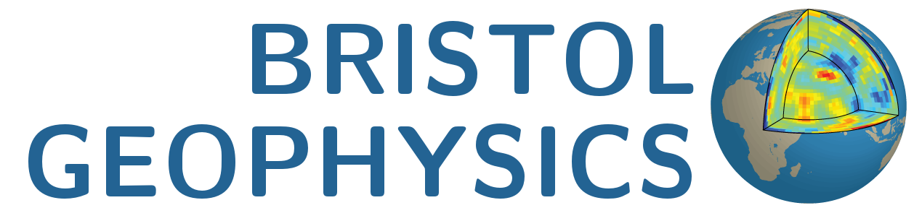

Andy Nowacki |
 |
School of Earth Sciences,
University of Bristol,
Wills Memorial Building,
Queen’s Road,
Bristol
BS8 1RJ
UK
+44 (0)117 331 5141
My research focusses on the study of the Earth’s lowermost mantle (known as ‘D″’), making use of seismic waves which have traversed this region.